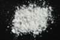

|
|
(For further information on spectroscopy, see:
http://speclab.cr.usgs.gov)
TITLE: Clinochlore GDS159 DESCRIPT
DOCUMENTATION_FORMAT: MINERAL
SAMPLE_ID: GDS159
MINERAL_TYPE: Phyllosilicate
MINERAL: Clinochlore, Chlorite
FORMULA: (Mg,Fe2+)5Al((Si3Al)O10(OH)8
FORMULA_HTML: (Mg,Fe2+)5Al(Si3Al)O10(OH)8
COLLECTION_LOCALITY: Frisco Mine, California? ORIGINAL_DONOR: Jim Post CURRENT_SAMPLE_LOCATION: U.S.G.S. Denver Spectroscopy Laboratory. ULTIMATE_SAMPLE_LOCATION: U.S.G.S. Denver Spectroscopy Laboratory. SAMPLE_DESCRIPTION:
Clinochlore was previously called Sheridanite.
IMAGE_OF_SAMPLE:

END_SAMPLE_DESCRIPTION.
XRD_ANALYSIS: 40 kV - 30 mA, 6.5-9.5 keV (sheridan.out=sherd9.out) Reference: JCPDS #12-242 Found: Chlorite type IIb; weak but sharp reflection at 9.3 degrees 2 theta; (mica?); weak reflection at 3.13 Angstroms (albite?) Sought but not found: quartz Comments: An excellent chlorite pattern; sharp reflections indicate good crystallinity. The chemical analysis is that of a clinochlore. J.S. Huebner, J. Pickrell, and T. Schaefer, 1994, written communication. 40 kV - 30 mA, 6.5-9.5 keV File: sherd159.out, -.mdi (smear mount on quartz plate) References: Bailey (1988 in Clays and Clay Minerals 36, 193-213); JCPDS #25-177, 35-731, 21-1276; Huebner's reference patterns Found: Clinoclore type IIbb, weak reflection at 9.4 Angstroms (mica?), 3.24 Angstroms (sphene(?), 3.12 Angstroms (La-monazite?) Comment: Very sharp reflections indicate high degree of crystallinity and compositional homogeneity. Position of (060) reflection consistent with Mg/(Mg+Fe+Mn) = 1.00. Optically, about modal 1% "heavy" minerals (huge index and birefringence). Rutile has its strongest reflection at 3.24 Angstroms but was not found optically (compare with GDS-158, "rutilated clinochlore").
END_XRD_ANALYSIS.
COMPOSITIONAL_ANALYSIS_TYPE: None # XRF, EM(WDS), ICP(Trace), WChem
| COMPOSITION KEYWORD |
Oxide ASCII |
Amount | Weight Percent, % |
Oxide html |
|---|---|---|---|---|
| COMPOSITION: | SiO2 | 31.3 | wt% | SiO2 |
| COMPOSITION: | TiO2 | 0.20 | wt% | TiO2 |
| COMPOSITION: | Al2O3 | 19.4 | wt% | Al2O3 |
| COMPOSITION: | Cr2O3 | 0.004 | wt% | Cr2O3 |
| COMPOSITION: | Fe2O3 | 1.16 | wt% | Fe2O3 |
| COMPOSITION: | MnO | 0.02 | wt% | MnO |
| COMPOSITION: | MgO | 34.7 | wt% | MgO |
| COMPOSITION: | CaO | 0.04 | wt% | CaO |
| COMPOSITION: | Na2O | 0.20 | wt% | Na2O |
| COMPOSITION: | K2O | 0.01 | wt% | K2O |
| COMPOSITION: | P2O5 | 0.01 | wt% | P2O5 |
| COMPOSITION: | LOI | 13.3 | wt% | LOI |
| COMPOSITION: | Total | 100.344 | wt% | |
| COMPOSITION: | O=Cl,F,S | wt% | #correction for Cl, F, S | |
| COMPOSITION: | New Total | wt% |
COMPOSITION_DISCUSSION:
None
END_COMPOSITION_DISCUSSION.
MICROSCOPIC_EXAMINATION:
END_MICROSCOPIC_EXAMINATION.
SPECTROSCOPIC_DISCUSSION:
END_SPECTROSCOPIC_DISCUSSION.
SPECTRAL_PURITY: 1b2b3b4_ # 1= 0.2-3, 2= 1.5-6, 3= 6-25, 4= 20-150 microns
| LIB_SPECTRA_HED: | where | Wave Range | Av_Rs_Pwr | Comment |
|---|---|---|---|---|
| LIB_SPECTRA: | splib04a r 1099 | 0.2-3.0µm | 200 | g.s.= |
| LIB_SPECTRA: | splib05a r 1911 | 0.2-3.0µm | 200 | g.s.= |
| LIB_SPECTRA: | splib06a r 5386 | g.s.= | ||
| LIB_SPECTRA: | splib06a r 5400 | g.s.= |
{kind=link}